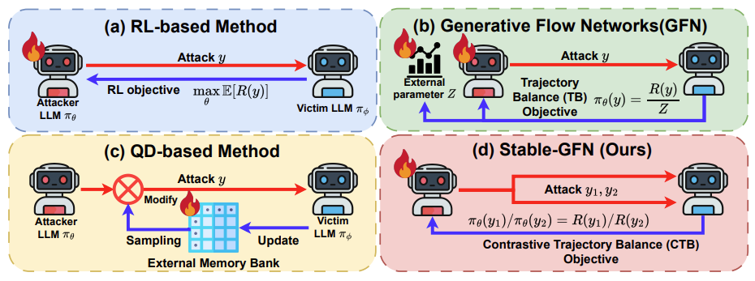
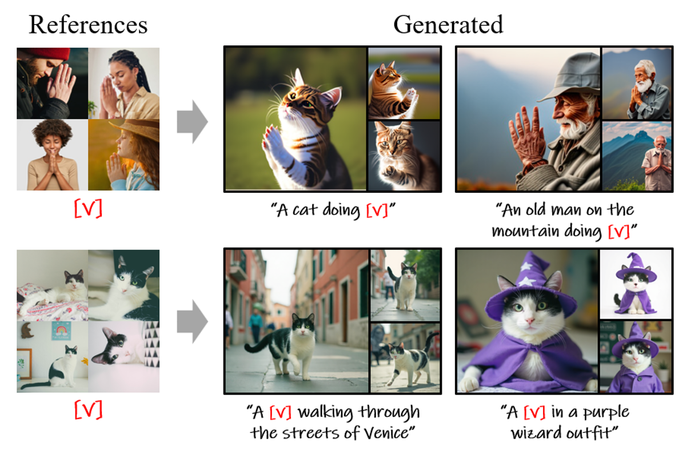
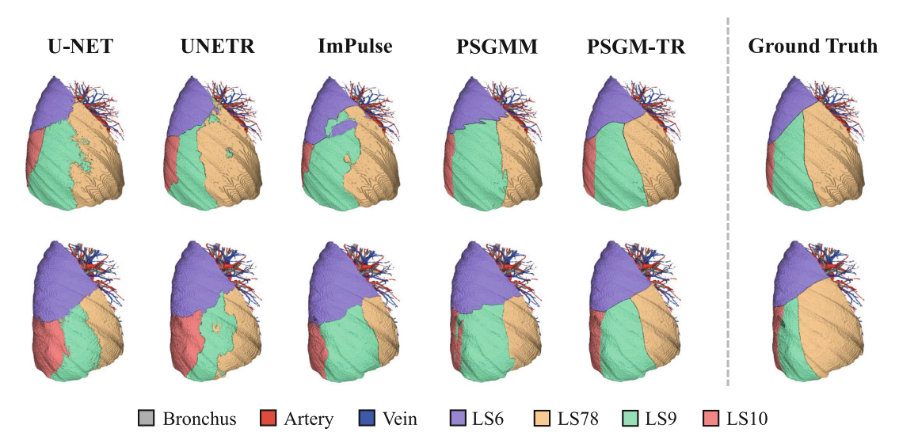
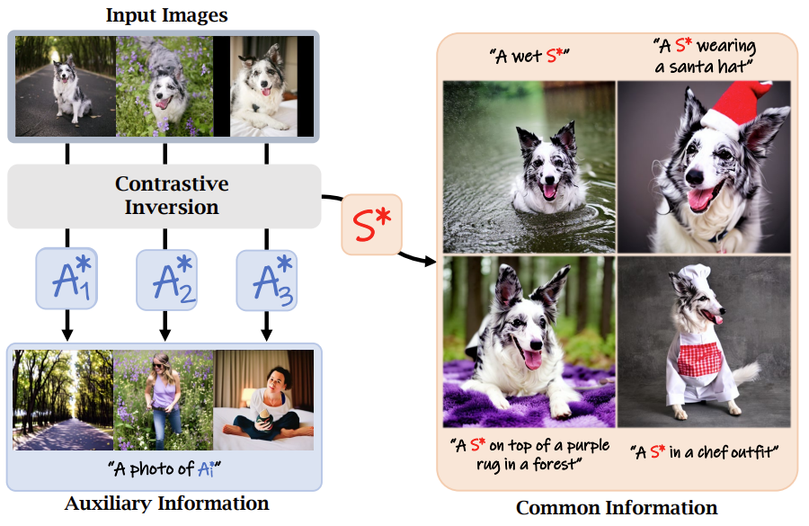
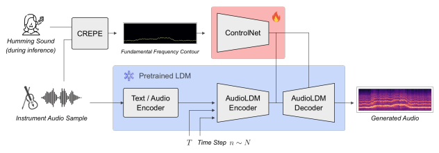

Minseo Kim
Ph.D. Student, School of Electrical Engineering, KAIST
I am a Ph.D. student at SIIT Lab,
KAIST, advised by Prof. Junmo Kim. My research interests are in generative AI,
with a particular focus on diffusion models.
Contact: alstj1571 [at] kaist.ac.kr
Education
-
2026.03 – PresentPh.D., KAISTSchool of Electrical EngineeringAdvisor: Prof. Junmo Kim · SIIT Lab
-
2024.03 – 2026.02M.S., KAISTGraduate School of AIAdvisor: Prof. Junmo Kim · SIIT Lab
-
2019.03 – 2024.02B.S., KAISTBio and Brain Engineering & School of Computing (double major)
Publications
* equal contribution · † corresponding author
-

Stable-GFlowNet: Toward Diverse and Robust LLM Red-Teaming via Contrastive Trajectory BalanceICML 2026 Spotlight (Top 2.2%) -

-

PSGM-TR: A Transformer-Based Approach for Pulmonary Segment Segmentation Using Gaussian Mixture ModelsMICCAIW 2025 · ShapeMI: Workshop on Shape in Medical Imaging -

Comparison Reveals Commonality: Customized Image Generation through Contrastive InversionCVPRW 2025 · CVPR Workshop on AI for Content Creation -

Pitch ControlNet: Continuous Pitch Control for Monophonic Instrument Sound GenerationISMIR 2024 · Late Breaking Demo
Work Experience
-
2023.09 – 2024.02AIRS MedicalAI Engineering Intern